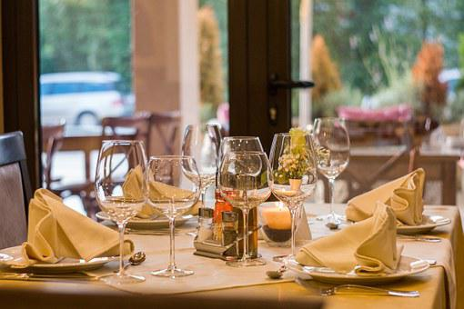

Welcome to Maori Kai
Sit back and relax in the natural surrounds of the beautiful Bay of Islands, while enjoying a true New Zealand Aotearoa experience.
We offer traditional Maori food and experiences, along side other cuisine favourites.
Open eveneings, Wednesday - Sunday.